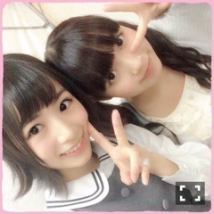
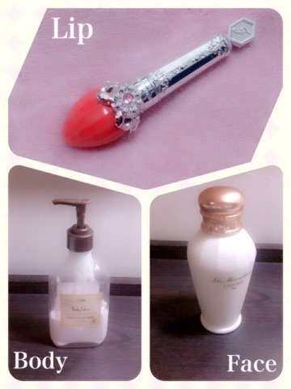

| 2015/05 07 Thu | ひめたん-OoO-その541 |
いちごのおふとん
昨日は名古屋で
11th最後の全国握手会でした！
来てくれたみんなありがとう～＊
今年のゴールデンウィークは
たくさんの人とお話できた
充実した時間になりました( ˇωˇ )
握手会はきぃちゃんとペア。
このふたりは考えてみれば
同い年
じょしらくチーム「ご」
必殺技......などなど
共通点いっぱいあった♡
ひなたぼっこのみなさん
ひめとも仲良くしてくれて
ありがとうございました！
きゅんきゅん王国のみんなも
ありがとうね～(∗ ˊωˋ ∗)
きぃちゃんの外ハネ
めっちゃかわいいいい♡

びーむ（<・ω・>）
そして11th最後の
ミニライブということで
11th期間に経験できたこととか
次この曲歌うのはいつなんだろうとか
考えてたら泣きそうになっちゃった。
今回アンダーのセンターとして
この曲を頂けたことが改めて
幸せだな～って思いました( ˇωˇ )
11thたくさんの支えがあったから
頑張ってくることができました！
握手会では新しい出会いがあったり
今まで以上に仲良くなれたり
毎回楽しかったよ♡
本当にありがとうございました。
12thも、そしてこれからも
よろしくね(´｡･v･｡｀)
さてさて、話変わって～
実は前々からね、おにゃのこたちから
Beautyページ見たい！って声を
いただいていたの⑅⃝◌
だから、ちょっとだけど
最近オススメのものたちを
紹介しようと思います～
みんな逆にこれいいよ！ってのが
あったらひめに教えてね(っ`•ω•´c)

上）ジルスチュアート
フォーエヴァージューシー
オイルルージュ
ひめが使ってる色は01。
メイクさんがオススメしてくれたの
ほんとにいいよ！
フォルムもかわいい♡
左）サボン ボディローション
パチョリ ラベンダー バニラ
クリームなので
脚のマッサージする時に使ってます
香りがあまーくて落ち着く！
もうずっと好きで
リピート買いしてるよ⑅⃝◌
右）レ・メルヴェイユーズラデュレ
フェイシャル ウォーター
化粧水。これ使うようになって
肌色が明るくなったねって
褒めてもらえるんだ～＊
ちょっと前に日記で話したものだよ♡
どうかな( ´｡•ω•｡` )
お役に立てたかな？

のぎ天みてねーー！台湾！
近々台湾のお話も日記書こう。
それから、
明後日5/9発売のBOMBにて
和田、北野、かりん、中元
インタビューしていただいています！
アンダーライブのお話です(ﾉ)'ω`(ヾ)
ちょっと珍しい組み合わせですが
この4人になった理由というのも
見ていただければわかりますよーー☆

 ひめたんは疲労がたまったら
ひめたんは疲労がたまったら
どうやって解消してますか？
寝る......かな(∗ ˊωˋ ∗)
あとはゆっくりおふろ入るとか
お友だちと電話するとか。
ひめたんは、
ソフトクリーム食べる時
舐める派？噛んで食べる派？
スプーンが欲しい派。
スプーンないと難しいよねぇ
ひめたんって前髪になんか
こだわりある？
ぱっつん！！
前髪伸びるのめっちゃ早いから
週2とかで切ってもらってる！
最近はまってることある？
「チョコチャンク」に惹かれる......♡
それからカフェ巡り、読書、アニメ、
ラジオ聞くことも相変わらず好き。
いつもコメントありがとう♡
そいえば、握手会でもコメント
たくさん聞かれたけれど
ミートボールはまだまだ残ってるよ！
ちょっとずつ食べてる。
美味しい、懐かしい( ^o^ )
みんなは、昔を思い出すような
思い出の味ってありますか？
ではね～＊

みずあめーー
(＊´・ω・＊)
コメント(1098)
2015/05/07 23:36